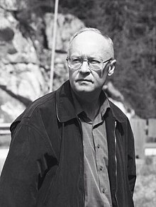
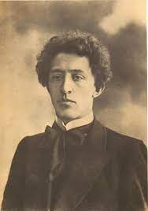

В году на радость и печаль по двадцать пять недель.
Мне двадцать пять недель - февраль, и двадцать пять - апрель.
По двадцать пять недель в туман уходит счет векам.
Летит мой звонкий балаган куда-то к облакам.
В году на радость и печаль по двадцать пять недель.
Мне двадцать пять недель - февраль, и двадцать пять - апрель.
По двадцать пять недель в туман уходит счет векам.
Летит мой звонкий балаган куда-то к облакам.
М.Щербаков

Ночь, улица, фонарь, аптека,
Бессмысленный и тусклый свет.
Живи еще хоть четверть века —
Всё будет так. Исхода нет.
Умрёшь — начнёшь опять сначала
И повторится всё, как встарь:
Ночь, ледяная рябь канала,
Аптека, улица, фонарь.